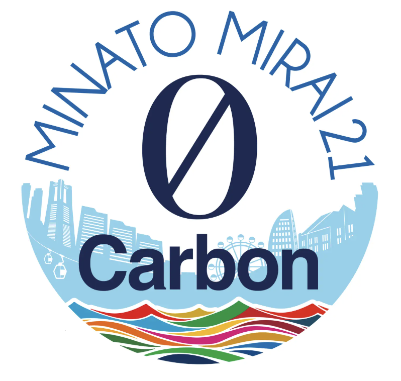
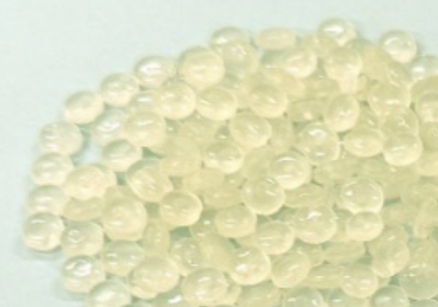
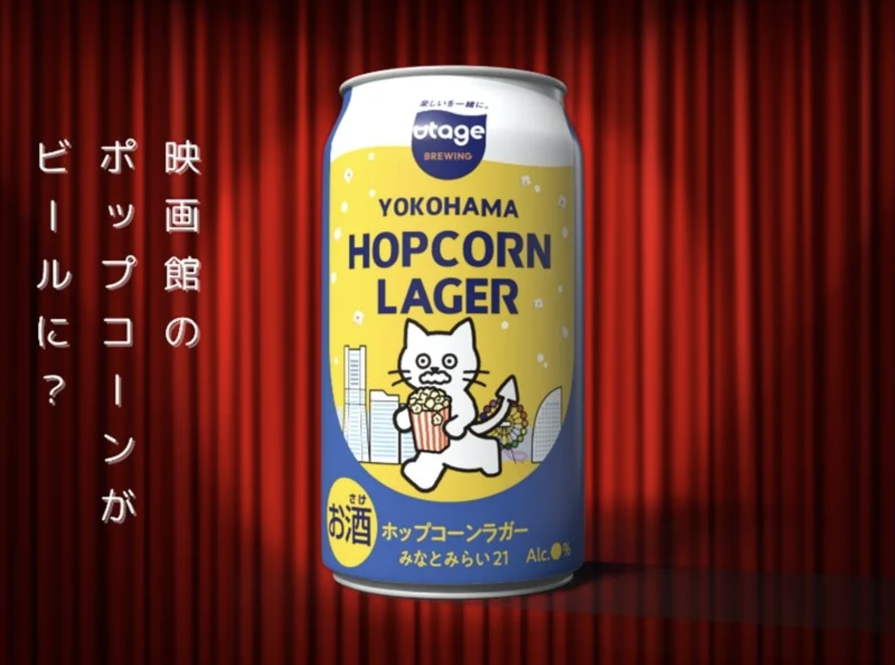

【脱炭素とサーキュラーエコノミー】
1.脱炭素専攻地域とは?
脱炭素専攻地域とは、2050年カーボンニュートラルに向けて、「地域脱炭素ロードマップ」に基づき環境省が公募する地域で、2030年度までに民間部門の
電力消費に伴うCO2排出の実質ゼロなどの要件を地域特性に応じて実現する地域のこと。2025年度までに少なくとも100ヵ所の地域が選定される予定で、『みなとみらい21地区』
を含む26地域が選定された。
2.使い終えたクリアファイルの資源循環
リサイクルに適した特性を持つクリアファイル（ポリプロピレン）を再生ペレットとして再利用する。

3.持続可能な航空燃料「SAF]について
SAFは「Sustainable Aviation Fuel（持続可能な航空燃料）」の省略で、循環型の原料で製造された航空燃料を指す。
航空燃料は主に「原油」から作られるが、SAFは、植物などバイオマス由来の原料や、飲食店などから排出される配食油などに含まれる炭素から主に製造される。
デメリットとして、製造コストが原油 100円/リットルに比べSAF 200~1600円/リットルと高いが、二酸化炭素の排出量削減や国産原料から作れるという点でSAFは活躍している。
4.ポップコーンを活用したクラフトビール
地区の食品ロス削減の新たな取組として、地区内の映画館で発生するポップコーンを原料に活用したサステナブルなクラフトビールが誕生。

5.参考文献